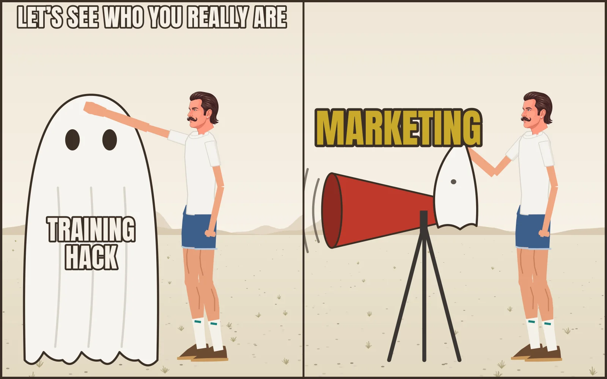
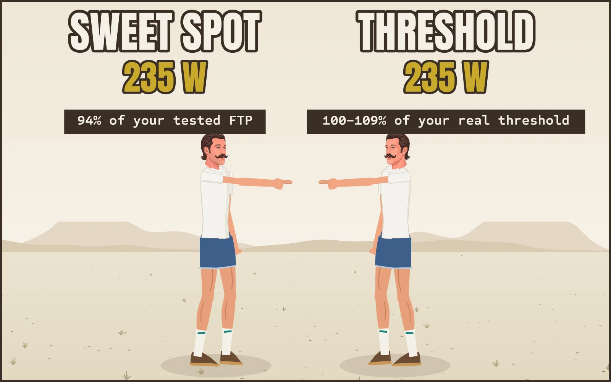
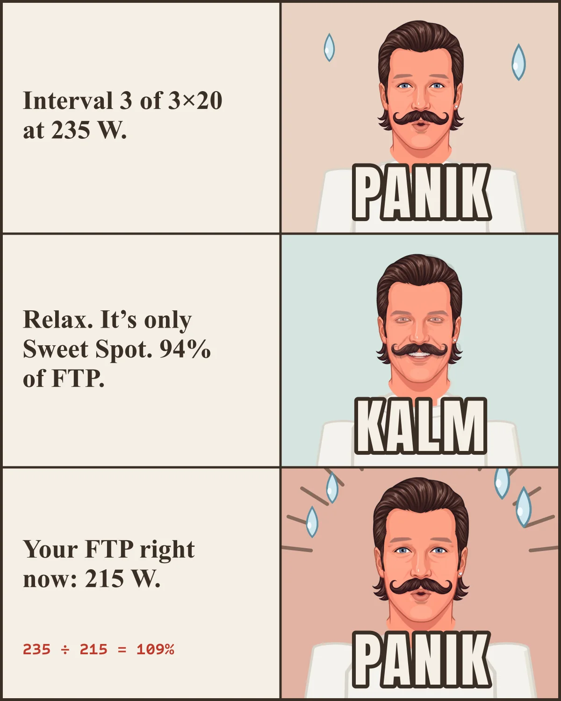
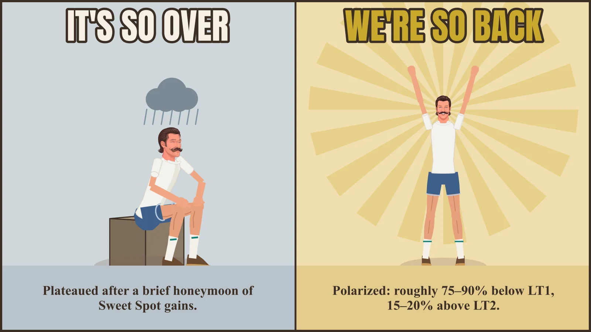
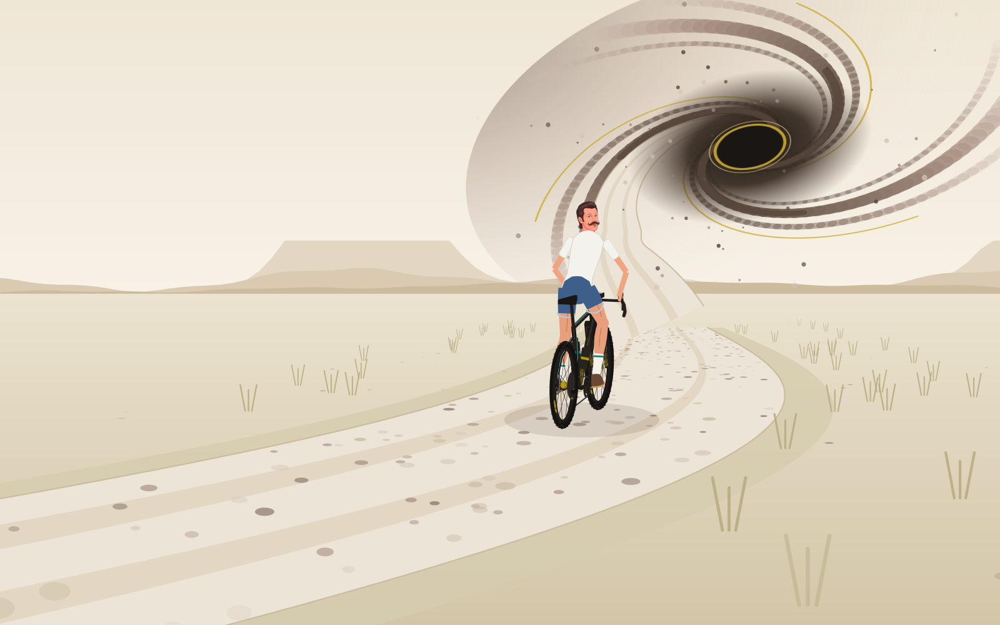
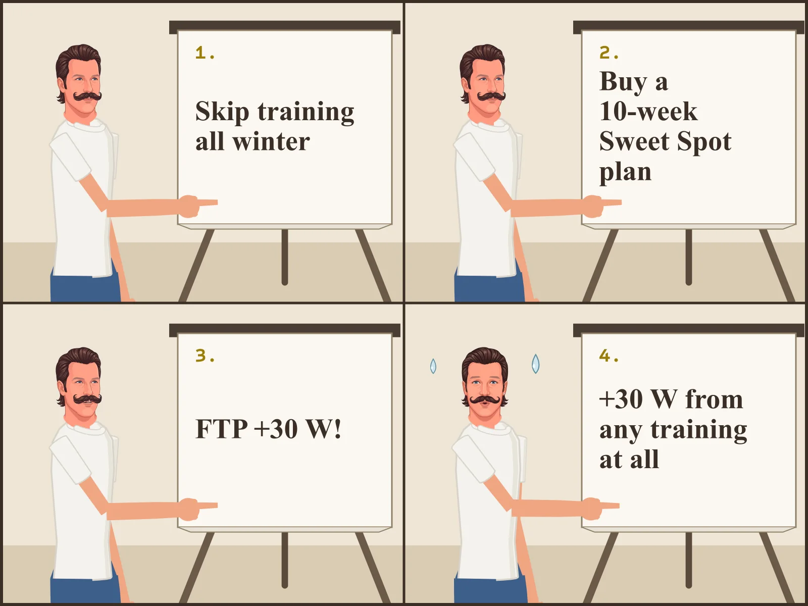
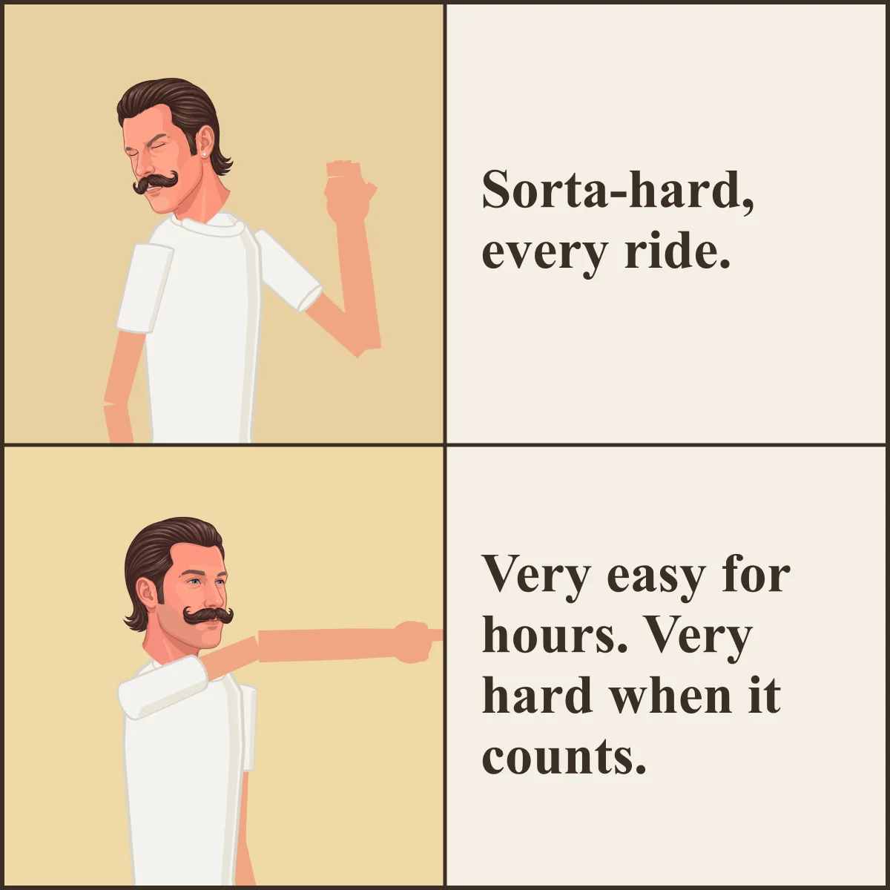
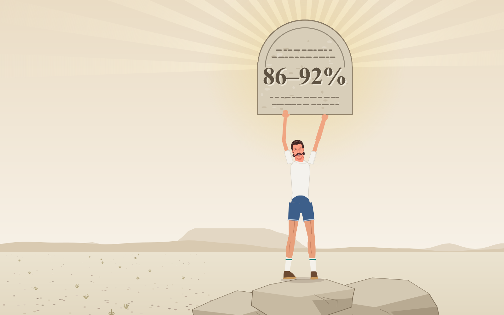
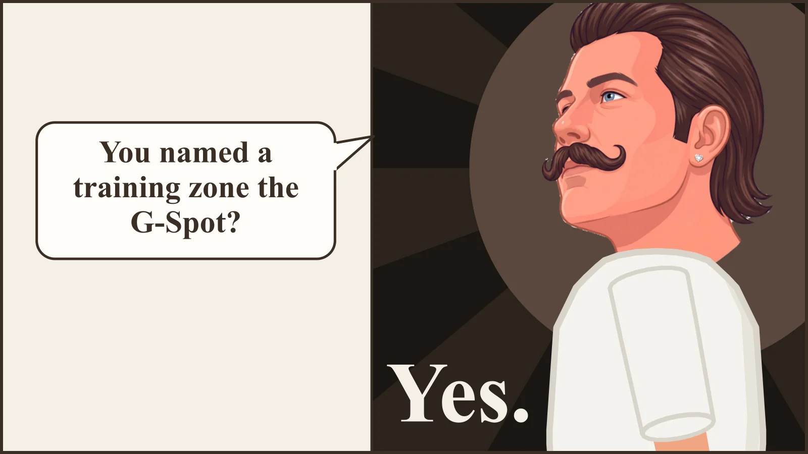

If you could go back in a time machine and change the course of one moment in history, would you go back to Germany in the 1930s and have a stern chat with a young Hitler, or would it make the world an even better place to take a short trip back in time to the early 2000s in Boulder, Colorado and roofie a local cycling coach’s sugar-free vanilla latte the second before he had a training zone epiphany?
It’s a close one, but I think, on balance, we’d all be better off going back in time to Boulder when its apartments cost less than Midwest mansions, George Bush was keeping us safe, and Blackberries were still a thing to prevent arguably the worst, most harmful, most misleading “discovery” in cycling training — the training zone called “The Sweet Spot.”
What is the Sweet Spot? Can We Call it Something Different?
To answer your second question first — no, we can’t call it something different. The icky feeling you get when you say it is the point.
And to answer your first question — Sweet Spot training, or training at 88–94% of Functional Threshold Power, traces its history back to roughly 2004 when Frank Overton of FasCat Coaching — “working alongside” (lol) exercise physiologist Andy Coggan — coined the term after analyzing power data from roughly 12 athletes over several months.1
In what sounds like the start of a less interesting Facebook origin story, Coggan (the real intellectual horsepower here) made a graph plotting training efficiency vs. intensity. As you can imagine, at some point on this graph there’s going to be a point where the training intensity produces maximum training efficiency.
Now, before we get too far ahead of ourselves, I’d like to emphasize that this graph was:
- Completely hypothetical — Coggan’s napkin scratch or random shit he scribbled on a whiteboard.
- Unitless — The Y-axis representing training efficiency did not have any real values or real-world data.
- According to Coggan, “only ever intended as conveying a concept, rather than being an accurate depiction of the relation between intensity and training effect.”2
Evidence · reconstruction
Reconstruction of Coggan’s original diagram
Training effect = increase in threshold power · Strain = physiological strain · Volume = maximum duration. Labels shortened from the original.
This is where our boy Frank comes in — at some point around that time Frank saw the point on Coggan’s unitless, hypothetical graph and called that point of maximum training efficiency for the intensity, the “Sweet Spot,” which I’m pretty sure Coggan secretly found kind of annoying and weird. (If you listen to any podcasts with Coggan as I have, any time Sweet Spot comes up he seems uncomfortable and even a little dismissive of it, even if it’s Frank who is interviewing him lmao.)
Obviously, putting the hypothetical Sweet Spot concept into practice requires a little bit of precision that Coggan was incredibly reluctant to engage in given the extremely non-existent scientific roots of the concept, but finally, at others’ urging and Frank’s enthusiastic help, he attached specific percentages of FTP to it — 88–94% — and called it a training zone, I guess after subjecting 12 unwitting cyclists to a steady diet of it for a few months, which is almost enough to pretend that it’s legit.
I have to pause us here, because this origin story is fucking hilarious, like arguably up there with Mark Zuckerberg coding up Facebook in his dormitory in an all-nighter after getting dumped by his girlfriend.
To recap, a certifiable genius named Andrew Coggan who revolutionized cycling training with the advent of widely available power meters (thanks CycleOps!) was playing around with some training concepts when Frank Overton seized upon one of his half-baked whiteboard brainstorm graphs to invent a proprietary, completely groundless physiological training zone that he has been the primary driver for a successful 20+ year coaching business.
I have not made up a successful training zone yet and parlayed that windfall into a nice house in Boulder so please subscribe to Slow, Mid, 38s so I can someday afford to get my family out of the Longmont ghetto.
Now, even if you hate Sweet Spot as much as I do, you have to concede that Frank, while not an intellectual colossus on the same level as Coggan, did something remarkable. From that singular intuition derived from a graph Coggan himself said was “for illustrative purposes only” with zero empirical evidence Frank produced:
- A full training methodology
- Thousands of training plan sales
- An entire generation of cyclists and coaches that internalized, incorrectly, that riding at Sweet Spot was a training hack that made you faster, faster.
As you’ll see, the opposite is true, and not just true because I’m a convincing person, but scientifically, repeatedly, demonstrably true. Sweet Spot isn’t so sweet because:
- Sweet Spot is really threshold
- It’s conceptually broken
- It makes you slow
- Any success stories are just noob gains
- Polarized is just better
- That said, G-Spot is better than Sweet Spot
- It’s predatory marketing
Where do you want to start? Me too. Let’s dive into why Sweet Spot is predatory marketing first.
The Real Issue — Sweet Spot is Predatory Marketing
Surprisingly, my real beef isn’t that Sweet Spot is a poorly named, made-up zone by an opportunistic businessman riding on the coattails of a more brilliant man that all the current scientific evidence agrees isn’t even the best way to train that has ruined an entire generation of cyclists. That could be forgiven.
What I can’t forgive is that Sweet Spot’s “founder” uses it as a cynical marketing tactic to sucker well-meaning time-crunched athletes into buying products and services that are supposed to be a “shortcut” to making them faster and when confronted with irrefutable evidence to the contrary or with essential nuance and context, he pretends he’s not playing the game he’s obviously playing.
What game? I’m going to spell this out because no one I’ve read seems to explicitly call out what’s going on:
Athletes train in the Sweet Spot zone because it’s supposed to be a hack to getting faster.

That’s it. It’s the equivalent for most people of discovering there’s this one simple trick to losing 10 lbs, or in this case, getting 10% faster — always presented, of course, like it’s some sort of training revelation between you and FasCat, and not something that everyone with a Huffy has heard about for 15 years nonstop.
And why do they think it’s a hack to getting faster? Because FasCat coaching spends 75% of their marketing resources every year flooding every marketing channel with Sweet Spot propaganda and clickbait headlines like “Sweet Spot is Better than Zone 2.”
And why does FasCat create these cynical headlines? For the exact reason I’m writing this article — because it stirs up controversy, and controversy draws attention to the topic, and attention is money. Every time FasCat does this, they’re printing money, and I’m no exception. In fact, as I write this, I’m trying to find a credit card my wife doesn’t have access to and Frank won’t recognize so I can buy myself more Sweet Spot plans and get ready for the season ahead.
You see, the best marketing is the marketing that your conscious mind, your professor part of your brain that sees through and understands, makes you think, “I see what they’re trying to do to me,” but it operates on your subconscious, your chimp brain, and appeals to cruder, baser desires without you realizing it.
That you can see through the marketing is exactly its brilliance — when you think you see through something, you let your guard down. What you don’t realize as you dangerously browse the FasCat website is that your chimp is rattling the cages down there and telling you that he wants to get fast now and isn’t that what Sweet Spot Training does and it’s only $20 for 4 weeks with a money-back guarantee you can afford that just do it?
When you wake up and check your inbox you’ll find it flooded with confirmations from FasCat that you’ve bought every single one of their Sweet Spot plans and a complimentary cheetah print kit in aspirational sizing is on its way to your house for free just after you agree to try out Coach Cat for a few years with terms in the fine print as questionable as Frank’s employee non-competes.
And the final coup de grâce to all of this is that when confronted, FasCat releases podcasts that pretend that the headline that created the controversy that necessitated the podcast explanation was all a big misunderstanding and then provides reasonable-sounding nuance and context that you’d expect of any self-respecting coach but you know what he doesn’t do? Rewrite the headline that prints cash.
As much as it pains me to admit this, Sweet Spot, just like cockroaches, will be with us after the nuclear apocalypse. Even though it is a completely bankrupt idea, it is a concept that just won’t die until that lizard part of our brains that is always searching for a shortcut and the chance to get one up on their friends dies.
Be that as it may, I’m still going to spend a couple thousand words tearing apart Sweet Spot like a prom dress, just because it’s the right thing to do.
First, let’s give Mr. Overton the benefit of the doubt and pretend that Sweet Spot is actually as good as it says it is and yet see that, even if that were true, most cyclists when they’re training at sweet spot are not training at sweet spot.
Sweet Spot is Really Threshold
People lie about their net worth, accomplishments, genital size, you name it, because they want to seem more impressive than they are. It should be no surprise to anyone that this habit of overstating reality doesn’t change when it comes to their functional threshold power.
Here’s a rule of thumb — whenever you hear someone tell you their threshold, I can guarantee you it’s roughly 5–10% higher than it actually is on average.
When cyclists talk about their FTP, they:
- Reference their best test ever, which may or may not have been 15 years ago.
- Performed it on a Stages first-generation left crank arm only power meter.
- Were perfectly rested and peaked for this test.
- Executed using a testing protocol that’s designed to flatter themselves.
- Tested in conditions — like a 20-minute climb, as opposed to a flat (where they can’t produce as much power) — that they seldom ride in reality.
- Take a percentage of their test value that’s optimistic — like 95%, or even, as FasCat does, 93% of their best 20-minute average power — rather than conservative and takes into account their phenotype, like being anaerobically gifted and inflating their estimated aerobic threshold.
- Ignore their test results completely and just set their threshold at what they want it to be.
Only one of these conditions needs to be true for the result to be that the athlete sets their FTP too high and thus ensures that all of their training zones are off.

And why is this a big deal?
Sweet spot is, officially, 88–94% of FTP. If your FTP is 5–10% lower than the typical athlete’s inflated number on average, that means that most of the time an athlete is doing a “Sweet Spot” workout, what they’re functionally doing is a threshold workout.

Think about that. It is funny to reflect that the end result of the creation of an entire zone predicated on athletes not doing threshold work because it incurs too big of a recovery cost is that athletes now correctly train at threshold.
Athletes were never getting quick threshold gains because they had figured out some physiological cheat code to hack their fitness — they had just effectively called the threshold zone something less mentally and physically intimidating that they could actually consistently train at.
Maybe this is hard to imagine, so let’s take those assumptions and show how they work if you had an FTP of 250w.
Case study · 3×20 min @ 235 W · tested FTP 250 W
The plan says sweet spot. Your threshold says otherwise.
Outline = the workout as planned (235 W, 94% of a 250 W test). Solid = the threshold you actually have, day and interval.
“Firmly in the threshold or even VO2max zone.”The case study, in full below
Sweet-spot band (88–94%)
Case Study: Cyclist with 250w FTP
Scenario 1: FTP Overestimation
Let’s say this cyclist has tested at 250w FTP (using the standard 95% of 20-minute power), but due to the factors you mentioned, their true sustainable 60-minute power is actually closer to 235w.
Sweet Spot Zone Based on Tested FTP:
- Lower end (88%): 220w
- Upper end (94%): 235w
Sweet Spot Zone Based on True FTP:
- Lower end (88%): 207w
- Upper end (94%): 221w
The gap is significant — our cyclist thinks they’re training in sweet spot when doing intervals at 230–235w, but they’re actually at or above their true threshold. This means they’re accumulating more fatigue than intended and potentially compromising recovery between workouts.
Scenario 2: Daily Fluctuations
- On a “good day” after rest: True FTP might be 235w
- On an average day: Perhaps 228w
- After a hard previous day: Maybe only 220w
If they base all their workouts on their 250w tested FTP, the sweet spot upper range would be 235w. On an average day, that’s already well above threshold (228w), and on a fatigued day, it could be more than 10% above their actual threshold!
Scenario 3: Intra-Workout Fatigue
Let’s say our cyclist sets up a classic sweet spot workout of 3×20 minutes at 235w (94% of their supposed 250w FTP).
- First interval: The athlete is fresh, and while 235w is still above their true threshold of 228w on this particular day, they can complete it with moderate difficulty.
- Second interval: Due to fatigue from the first interval, their effective FTP might drop to around 220w. Now 235w represents 107% of their momentary threshold — a significant VO2max effort, not sweet spot.
- Third interval: Their effective FTP might decline further to 215w. The 235w target now represents 109% of their current capabilities — a severe anaerobic effort that will rapidly deplete glycogen stores and produce significant lactate.
The Compounding Effect
When all three factors combine, the impact is dramatic:
- Starting point: Athlete believes FTP is 250w when it’s actually 235w
- Day-specific: On this particular training day, true FTP is only 228w due to residual fatigue
- Intra-workout: By the final interval, effective FTP has dropped to 215w
So while thinking they’re doing sweet spot work at 94% of FTP (235w), they’re actually working at:
- 103% of true baseline FTP (235w ÷ 228w)
- 109% of their momentary FTP in the final interval (235w ÷ 215w)
This is firmly in the threshold or even VO2max zone — much more physiologically demanding than intended.
Practical Implications? Getting Really Sad.
I could say it’s practical stuff like insufficient recovery, training zone mismatch, and exhaustion risk, but the real victim in all this is the athletes stoke.

Every single athlete I’ve seen spend way too much time in la la Sweet Spot land had their vibe tank because they just didn’t improve as much as they’d hoped.
Instead, they tended to get into some weird spiral where they couldn’t go really hard, were hungry all the time, had shit sleep, and were just kinda grumpy a lot. It soured their relationship to the sport.

It’s Conceptually Broken
If you remember the origin story of Frank nicknaming a point of intersection of Training Efficiency and Training Intensity on Coggan’s unitless graph, you should know that effectually Training Efficiency became “TSS.”
TSS, or Training Stress Score, is a number that quantifies the intensity and duration of your training load in relation to your functional threshold.3 It’s a useful concept because before it when athletes described their training they’d only give one dimension of that workout, i.e., “I rode 3 hours” — which can mean a lot of different things. For example, you can do a 3-hour coffee ride or an all-out group ride. Just citing the duration of something obscures the real training effect of the ride. In this way, TSS was transformative in understanding training load for athletes.
Yet, TSS is a concept, and like most concepts, humans like to take a good thing and overdo it. In this case, athletes, instead of trying to maximize miles or hours, started to maximize TSS accumulation.
Why? Because more is better, obviously.
And what’s the best way to accumulate the most TSS? You guessed it — Sweet Spot.
While this sounds like a good strategy, it has one fatal flaw — TSS misleads people into thinking that more training stress equals more adaptation, when in fact mindlessly racking up TSS does the opposite — it slows adaptation.
Just like with predatory marketing, there’s a formal name for this called Goodhart’s Law, which states that when a metric becomes a goal, it ceases to be a good metric.4
The point of TSS is to quantify training load, NOT training adaptation. In this example, TSS is the metric, and adaptation is the goal. When athletes make TSS the goal instead of the metric, people just try to maximize TSS because they erroneously think that that’s the same as producing the best adaptation.
In this way, Sweet Spot training became one of the favorite training tools of brainwashed athletes convinced that the 40-watt bump in their FTP they’re gunning for is just on the other side of yet another block of Sweet Spot training.
Maybe you think this all sounds theoretical, but I’m telling you, if you’ve coached in the cycling space long enough, you’ll come across someone that drank the Sweet Spot Kool-Aid so hard that they’ve all but converted their 401ks to cash and sent it over to Frank. They refuse to train any other way and see things entirely through this TSS maximalist lens and never consider for a moment that the whole concept of TSS doesn’t mean what they think it means.
As we’re about to discuss, the evidence for the best way to produce reliable long-term adaptation isn’t TSS maximization through Sweet Spot work, but training most of your time under that intensity with shorter, but more intense workouts above that intensity.

You’ve loved every word I’ve written and would make the world a better place if you shared this with someone.
Subscribe to the Newsletter →Slow, Mid, 38s — Free, weekly, no Sweet Spot
It Makes You Slow
Study after study after study, big expensive platforms, and numerous anecdotal accounts all converge on the same conclusion — moderate intensity training, or doing a significant amount of training between LT1 and LT2, makes you slow as hell. While that’s not what they say in the scientific papers, this is what they are saying between the lines.
Why? Easy:
- It wrecks your nervous system
- It’s bad for fat oxidation
- Mitochondria hate it
I’ll run through this quick, because despite those points being the most important scientifically, they’re also the details in this article most likely to make you fall asleep.
Your Nervous System Treats Sweet Spot Like Threshold
Here’s the kicker: your autonomic nervous system can’t tell the difference between sweet spot and threshold. Stephen Seiler’s research group measured heart rate variability recovery after sessions at different intensities and found something that should terrify sweet spot devotees — the first lactate threshold acts like an on/off switch for autonomic stress.5

Ride below LT1, even for two hours? Your nervous system barely notices. Cross above LT1 into sweet spot territory? Your body responds as if you just did a threshold session. The recovery cost is essentially identical whether you’re grinding away at 90% FTP or hammering at 105%.
Recovery cost vs intensity · shape, not data (Seiler 2007)
This, then, goes far in explaining why it’s important to be selective when spending a lot of time above LT1. When you do, you’re stressing yourself, so you want to make sure the stress really counts and drives the adaptations you’re looking for.
Sweet Spot Burns Your Matches (And Your Carbs)
When you ride at sweet spot intensity, you’re sitting at around 3–6 mmol/L of blood lactate. At those concentrations, lactate itself inhibits the enzymes (CPT1 and CPT2) that shuttle fat into your mitochondria for fuel.6 You’ve essentially locked the door on fat oxidation and forced your body to burn through glycogen stores.
The intensity where you actually maximize fat burning — what scientists call FatMax — sits well below sweet spot, typically in Zone 2 around 2 mmol/L of lactate. Iñigo San Millán, who’s spent 25 years coaching everyone from weekend warriors to Tadej Pogaçar, is blunt about this: Zone 2 training produces “the biggest improvement in fat burning and the biggest improvement in lactic clearance capacity.”7
Sweet spot training doesn’t build metabolic flexibility — it reinforces carbohydrate dependence. You’re training your body to be a gas-guzzling V8 when endurance performance demands a hybrid engine.
Mitochondria Want You to Go Easy or Go Hard
Here’s where it gets really damning: mitochondrial biogenesis — the creation of new cellular powerhouses that actually make you faster — shows intensity-dependent activation. High-intensity cycling induces approximately 2.5-fold greater mitochondrial protein synthesis than moderate-intensity work.8 PGC-1α, the master regulator that tells your cells to build more mitochondria, shows the greatest expression at higher intensities.
Sweet spot sits in no man’s land. It’s not easy enough to accumulate massive aerobic volume with minimal autonomic cost, and it’s not hard enough to maximally trigger the intensity-dependent signaling that builds mitochondria. You get the worst of both worlds: the recovery cost of hard training with the adaptive stimulus of not-that-hard training.

I won’t name names, but I’ve worked with plenty of athletes who spend almost every pedal stroke in this zone and after a brief honeymoon period of gains, they plateau hard and can’t figure out why adding more volume at sweet spot isn’t working anymore.

The Black Hole Metaphor is Perfect
Seiler called it the “black hole” of training intensity, and the physics metaphor is apt. Black holes trap things that get too close — their gravitational pull is so strong that nothing escapes. Sweet spot training traps athletes in the same way. It feels productive because it’s hard, but not so hard you can’t do it several times a week. It becomes the default mode.
The problem is you’re stuck there, accumulating fatigue that limits your ability to go truly easy (which builds your aerobic base) or truly hard (which drives VO2max and anaerobic capacity). You end up training in the middle all the time, which — if we’re being honest about what the research shows — is the single best way to ensure you never reach your genetic ceiling.
Sweet spot makes you fit enough to ride steady in a breakaway. But if you want to win, you need to be able to go deep below LT1 for hours and spike hard above LT2 when it matters. Sweet spot training systematically prevents both adaptations.
![Two-panel comparison with Gravel God twice. Left, "The Virgin Sweet Spot Rider", small and hunched, sweating, with arrows: "3×20 at 94% of a flattering FTP test", "FTP 5–10% optimistic, so it's really threshold", "always kinda tired", "every ride sorta hard", "stuck in the black hole", "plateaus after the noob gains". Right, "The Chad Polarized Rider", striding and smiling, with arrows: "75–90% of the time below LT1: chatting pace", "15–20% above LT2: hard days actually hard", "recovers between them", "very easy or very hard, rarely in between", "beats threshold-heavy in head-to-head trials".](img/memes/virgin-sweetspot-chad-polarized-m@2x.webp)
Sweet Spot’s Success Stories are Just Noob Gains
If you’re unfortunate enough to have accidentally signed up for FasCat’s newsletters, you will frequently get hit with emails with headlines about how much Steve, a 45-year-old father of 8, improved his FTP by 30 watts in 10 weeks by using Sweet Spot training. While I’m happy for Steve and sincerely want to educate him on birth control, I have tough news — he didn’t improve that much because of Sweet Spot training. He improved because any training is better than not training.
Huh?
Steve has 9 kids (or did I say 8?) and doesn’t have much time to train, so he frequently doesn’t train throughout the year, which means he gets really out of shape at times. When he does train, however, he’s starting from such a shockingly low point that any training is the equivalent of a nuclear bomb to his body and after a few rides every single gene that codes for not being slow is getting madly upregulated to meet the sudden, ridiculous metabolic, cardiovascular, neurological, and muscular demands of all this Sweet Spotting. The bump in performance athletes get when they go from not training at all to training some is called noob gains.

The mistake, here, is to pretend that Sweet Spot is doing all the heavy lifting. Steve doesn’t know this, but he’d actually get faster and enjoy himself more if he did most of his training easier, in say, an inferior zone like Zone 2, and some, but not much of it in an extremely violent zone, like Zone 5 or 6. Instead, he’s unfortunately been brainwashed by Sweet Spot propaganda that turns almost every workout into some grueling sorta-hard blah that doesn’t allow him to think but also doesn’t really make him hurt like he should but gives him the false feeling of making great progress.
However, Steve doesn’t know that. He was in the Marines and thinks “No pain, no gain” and doesn’t think he’s training hard enough unless he’s always bleeding out of his eyeballs. He really does improve a lot, and once the 8- or 10-week training plan is over, he is a lot faster, and sends over a thank-you note to his good buddy Frank for his genius training zone and unwittingly becomes more social proof that ensnares future well-meaning cyclists into buying into a made-up training zone.
Polarized Training is Just Better
Actually, that’s just clickbait. If that upsets you, imagine how I feel after being on FasCat’s newsletter for 10 years.
Look — polarized training (roughly 75–90% below LT1, 15–20% above LT2) consistently outperforms threshold-heavy training in controlled studies. Neal et al. (2013) showed 8% peak power gains vs. 3% for threshold training.9 Stöggl and Sperlich (2014) found polarized improved VO2peak by 11.7% while threshold training showed improvement only in work economy.10 Esteve-Lanao et al. (2007) demonstrated that simply replacing easy training with moderate/sweet-spot-intensity training — at equal total load — produced worse outcomes.11 Rosenblat et al. (2019) found a moderate effect size favoring polarized over threshold for time-trial performance.12 The most recent 2025 network meta-analysis by Rosenblat, Seiler, and colleagues pooled 13 studies and 348 athletes. It didn’t crown an overall winner: no intensity distribution was significantly better. But it did say who should do what. Competitive athletes may gain more from polarized training; recreational athletes from a pyramidal mix. Notice what isn’t on that list: threshold-heavy.13
The studies, side by side
What the cited papers actually tested
Click a column to sort. Numbers come from each paper’s abstract; “—” means the abstract doesn’t state it.
| Esteve-Lanao et al. 11 | 2007 | 12subelite runners | 5 moweeks not stated | More zone 1 (80.5/11.8/8.3) vs more zone 2 (66.8/24.7/8.5) | 10.4 km race: −157 s vs −121.5 s (p = 0.03) abstract |
| Neal et al. 9 | 2013 | 12male cyclists, crossover | 6per arm | Polarized (80/0/20) vs threshold (57/43/0) | Peak power +8% vs +3%; lactate threshold +9% vs +2% abstract |
| Stöggl & Sperlich 10 | 2014 | 48runners, cyclists, triathletes, XC skiers | 9 | Polarized vs threshold vs HIIT vs high volume | Polarized: VO2peak +11.7%, time to exhaustion +17.4%; threshold: slight work-economy gain only abstract |
| Rosenblat et al. 12 | 2019 | —4 studies reviewed, 3 pooled | — | Polarized vs threshold (meta-analysis) | Time trial: moderate effect favouring polarized (ES −0.66, 95% CI −1.17 to −0.15) abstract |
| Rosenblat, Seiler et al. 13 | 2025 | 34813 studies; 198 competitive, 150 recreational | — | Polarized vs pyramidal and other distributions (network meta-analysis) | No significant difference between polarized and any other distribution; competitive athletes may benefit more from polarized, recreational from pyramidal abstract |
Esteve-Lanao et al. 112007
- Athletes (n)
- 12subelite runners
- Weeks
- 5 moweeks not stated
ComparisonMore zone 1 (80.5/11.8/8.3) vs more zone 2 (66.8/24.7/8.5)
Headline result10.4 km race: −157 s vs −121.5 s (p = 0.03) abstract
Neal et al. 92013
- Athletes (n)
- 12male cyclists, crossover
- Weeks
- 6per arm
ComparisonPolarized (80/0/20) vs threshold (57/43/0)
Headline resultPeak power +8% vs +3%; lactate threshold +9% vs +2% abstract
Stöggl & Sperlich 102014
- Athletes (n)
- 48runners, cyclists, triathletes, XC skiers
- Weeks
- 9
ComparisonPolarized vs threshold vs HIIT vs high volume
Headline resultPolarized: VO2peak +11.7%, time to exhaustion +17.4%; threshold: slight work-economy gain only abstract
Rosenblat et al. 122019
- Athletes (n)
- —4 studies reviewed, 3 pooled
- Weeks
- —
ComparisonPolarized vs threshold (meta-analysis)
Headline resultTime trial: moderate effect favouring polarized (ES −0.66, 95% CI −1.17 to −0.15) abstract
Rosenblat, Seiler et al. 132025
- Athletes (n)
- 34813 studies; 198 competitive, 150 recreational
- Weeks
- —
ComparisonPolarized vs pyramidal and other distributions (network meta-analysis)
Headline resultNo significant difference between polarized and any other distribution; competitive athletes may benefit more from polarized, recreational from pyramidal abstract
Zone splits are % of training time below LT1 / between / above LT2. Meta-analyses list pooled athletes.
Where the time goes · polarized
Neal et al. 2013 · peak power gain
+11.7%VO2peak, polarized · Stöggl & Sperlich 2014
Polarized / PyramidalBest fit for competitive / recreational athletes · 2025 network meta-analysis
The evidence is clear.
But here’s what the polarized-vs-sweet-spot debate gets wrong: zones don’t exist in isolation.
Adaptation isn’t a property of a single training intensity — it’s an emergent property of your entire training system. How often you train, how long, your intensity distribution, your recovery protocols, your training history — all of it interacts to produce the stimulus your body responds to. Sweet Spot isn’t inherently good or bad. It’s a tool. And like hammers and screwdrivers, its value depends entirely on what you’re building and when you use it.
The problem isn’t that Sweet Spot can’t work. It’s that the way it’s marketed and prescribed — as a default training mode, a shortcut, a hack — fundamentally misunderstands how adaptation works. When Sweet Spot becomes the center of your training philosophy instead of an occasionally useful intensity, you’ve fallen into the exact trap Seiler warned about: the black hole that prevents you from going easy enough or hard enough to maximize your genetic potential.
So yes, polarized training is better. But not because Zone 2 is magic or because VO2max intervals are superior. It’s better because it acknowledges the fundamental truth that Sweet Spot marketing denies: there are no shortcuts. You need massive easy volume to build your aerobic engine, and you need genuinely hard intensity to push your ceiling. Everything else is just noise in the middle.

That Said, G-Spot is Better than Sweet Spot
God visited me in a dream months ago and told me that if I was able to carry out 40 days and 40 nights of sweet spot training he’d reveal a truth to me.

After completing all those scientifically superior workouts and testing my FTP (it went down 10 watts), He revealed to me a prophecy via a graph on a tablet that charted training efficiency vs. training intensity, and he labeled this unitless graph on a tablet and then leaned in close while pointing to the intersection and whispered, “The G-Spot.”
The G-Spot! This, this is the intensity that Sweet Spot was always meant to be. It’s 86–92% of FTP, unlike the fraudulent 88–94% Sweet Spot percentage, all but ensuring that every cyclist that overestimates their FTP is still comfortably under their FTP when they train at this intensity, which is what Sweet Spot always intended.
It’s a better name, because on the one hand it refers to you know what (Bailey), but when questioned about it I can just say it’s short for the “Gravel Spot,” or the intensity at which most gravel racers race for most gravel events.

I’ve had at least 13 athletes on it for about 4 months and I can tell you that their gains at FTP have been HUGE! Keep your eyes peeled on the TrainingPeaks Training Plan Marketplace as I’ll be selling G-Spot training plans for $19.95 with shipping and handling to a limited number of select customers. Let me know if you want to get your hands on a copy!
References
1 Overton, F. (2005). “Sweet Spot Training.” PezCyclingNews.
2 Coggan, A. R., & Allen, H. (2006). Training and Racing with a Power Meter. VeloPress.
3 Coggan, A. R., & Allen, H. (2006). Training and Racing with a Power Meter. VeloPress.
4 Goodhart, C. A. E. (1984). “Problems of monetary management: The U.K. experience.” In Monetary Theory and Practice. London: Macmillan.
5 Seiler, S., Haugen, O., & Kuffel, E. (2007). “Autonomic recovery after exercise in trained athletes: Intensity and duration effects.” Medicine & Science in Sports & Exercise, 39(8), 1366–1373.
6 San-Millán, I., & Brooks, G. A. (2018). “Assessment of metabolic flexibility by means of measuring blood lactate, fat, and carbohydrate oxidation responses to exercise.” Sports Medicine, 48(2), 467–479.
7 San-Millán, I., & Brooks, G. A. (2018). “Assessment of metabolic flexibility by means of measuring blood lactate, fat, and carbohydrate oxidation responses to exercise.” Sports Medicine, 48(2), 467–479.
8 Bishop, D. J., et al. (2019). “High-intensity exercise and mitochondrial biogenesis: Current controversies and future research directions.” Physiology, 34(1), 56–64.
9 Neal, C. M., et al. (2013). “Six weeks of a polarized training-intensity distribution leads to greater physiological and performance adaptations than a threshold model in trained cyclists.” Journal of Applied Physiology, 114(4), 461–471.
10 Stöggl, T. L., & Sperlich, B. (2014). “Polarized training has greater impact on key endurance variables than threshold, high intensity, or high volume training.” Frontiers in Physiology, 5, 33.
11 Esteve-Lanao, J., Foster, C., Seiler, S., & Lucia, A. (2007). “Impact of training intensity distribution on performance in endurance athletes.” Journal of Strength and Conditioning Research, 21(3), 943–949.
12 Rosenblat, M. A., et al. (2019). “Polarized vs. threshold training intensity distribution on endurance sport performance.” Journal of Strength and Conditioning Research, 33(12), 3491–3500.
13 Rosenblat, M. A., Seiler, S., et al. (2025). “Which training intensity distribution intervention will produce the greatest improvements in maximal oxygen uptake and time-trial performance in endurance athletes?” Sports Medicine.